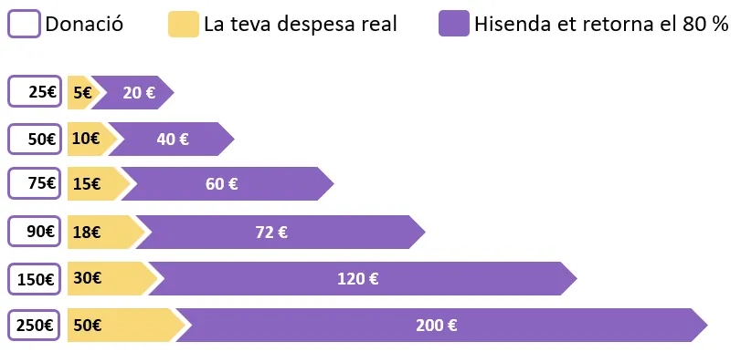

Haz un donativo
Tu aportación hace posible el trabajo con niños, niñas, jóvenes y familias de la Zona Nord.
Cada euro se transforma en oportunidades
Con tu donativo hacemos posible el ocio educativo de los sábados, el refuerzo escolar de cada tarde, la atención psicológica en las escuelas y el acompañamiento de las familias con bebés.
Por transferencia bancaria
ES37 2100 3307 4921 0089 2027
CaixaBank · Associació Educació i Lleure Ubuntu
Con Bizum
Abre Bizum → «Fer donatiu» → escribe el código 02962 → indica el importe → confirma. El código identifica a Associació Ubuntu como destinataria.
Hazte socio o socia
Con tu cuota (la decides tú; referencia: 50 € anuales) colaboras con los proyectos, recibes el boletín y participas en la Asamblea General. Escríbenos para darte de alta.

Las donaciones desgravan: hasta el 80% del IRPF en los primeros 150 € y deducciones de hasta el 45% con donaciones recurrentes (Ley 49/2002, entidad de utilidad pública).
No todo es dinero
Donaciones en especie
Recogemos juguetes, ropa, comida y productos del hogar para las familias. Ponte en contacto y pasamos a buscarlos.
Voluntariado
Tu tiempo semanal vale oro en los proyectos. Hazte voluntario/a.
Difusión
Comparte nuestros proyectos en las redes y en tu entorno. Darnos a conocer también es ayudar.
Dónde va tu dinero
Entidad sin ánimo de lucro n.º 49677, declarada de utilidad pública (Ley 49/2002). Rendimos cuentas cada año: consulta las memorias anuales, el boletín y la documentación.